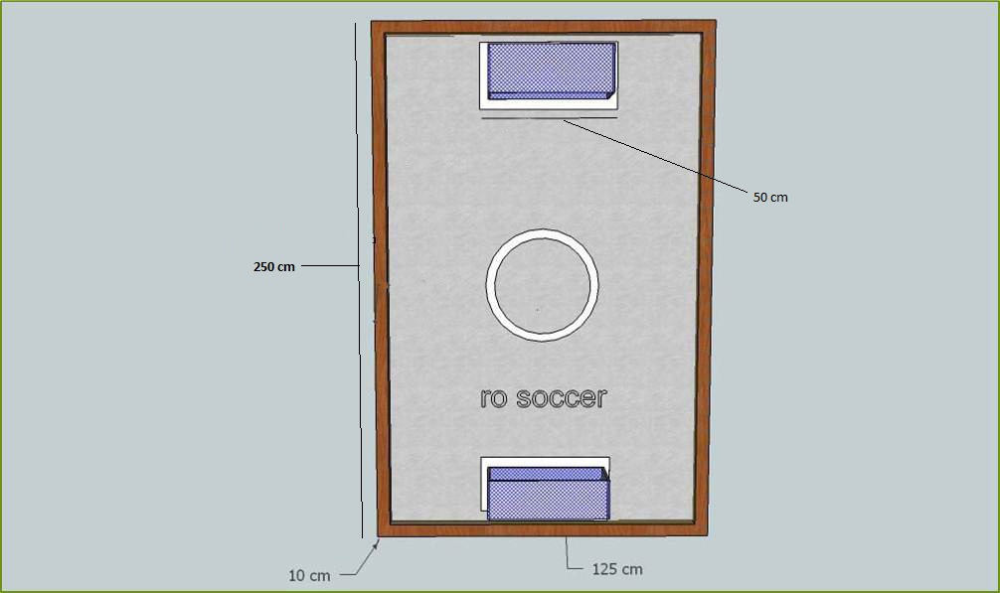

Event Description
Explore the thrill of soccer, the challenge of team co-ordination, your skills of control over the bot & your limit to resist the pressure and deliver at the same time.
In this event, teams have to try to score goals against their opponents & save their goal at the same time. Extend your imagination in gameplay and tactics. If you think you are up to the mark Ro-Soccer is the platform for robotics enthusiasts like you.
Objective
EACH TEAM WOULD HAVE TWO MANUAL BOTS, ONE AS DEFENDER AND THE OTHER AS STRIKER. EACH TEAM WILL COMPETE WITH ANOTHER TEAM ALSO HAVING TWO BOTS. THE FIRST ROUND WOULD BE THE PRELIMS & AT THE END OF THE PRELIMS, DEPENDING UPON THE SCORE, TEAMS WILL QUALIFY TO THE NEXT ROUND.
Bot Specifications
The dimensions of the bots should be 20*20*25 cm.
10% tolerance would be allowed in 20cm lengths & any deviations from the above mentioned dimensions may lead to disqualification of the team.
Event Rounds
- KNOCK-OUT :WILL BE PLAYED AMONG ALL THE
TEAMS, AMONGST WHICH TOP 8 TEAMS WOULD BE SELECTED.
- QUARTER FINAL :ROUND WILL BE PLAYED
BETWEEN THE ABOVE 8 TEAMS & TOP 4 TEAMS WOULD BE SELECTED FOR THE SEMIS.
- SEMI FINAL :WOULD BE PLAYED AMONG THE ABOVE 4 TEAMS.
- FINAL :WOULD BE PLAYED AMONG THE TOP 2 TEAMS.
Arena

Selection Procedure
- FIRST PREFERENCE WOULD BE GIVEN TO POINTS SCORED.
- FOR SAME SCORES, GOALS SCORED WOULD BE GIVEN CONSIDERED.
- IF THE NO. OF GOALS SCORED WOULD ALSO BE SAME, THEN THE NO. OF GOALS CONCEDED WOULD BE CONSIDERED.
- IN CASE ALL OF THE ABOVE ARE EQUAL, THEN PENALTY SHOOTOUTS WOULD BE HELD.
In case of technical problem
- Each team would be given 3 minutes. If they want to postpone the match for some time then 1 goal of their score will be awarded to the other team. If the team doesn’t have any goals, then the team would be awarded negative goals.
- In case one of the bots is disabled, the team can defend their goal with the help of their remaining bot.
In case of a draw
- In case of a draw, penalty shoot-out would be held as tie breaker.
- Goal difference would also be checked.
- Total goals scored & conceded would be also checked.
Scoring
- THE TEAM WHICH SCORES THE FIRST GOAL WOULD BE AWARDED 100 POINTS.
- 50 POINTS WOULD BE AWARDED FOR ALL FURTHER GOALS.
- EACH PENALTY WOULD BE AWARDED 50 POINTS.
- EACH HAND TOUCH WOULD COST THE TEAM 20 POINTS. ANY KIND OF TECHNICAL FAULT MAY ALSO COST POINTS TO THE TEAM.
General Rules
- Each team has to have two manual bots, one as striker & the other one as defender.
- Maximum 5 members are allowed in 1 team
- In the prelims there will be two teams taking part in a match of 6mins. The highest scorer team would be promoted to the next round.
- No fans or blowing devices are allowed.
- The ball can’t be trapped in any form.
- Deliberate physical contact of the bots will not be allowed. The referee will be judging such cases. In case the connection wire is targeted, it may result in reduction of 1 goal each time, and if the wires are entangled then gameplay would be stopped to untangle them. The final round will be conducted in two halves each of 4 mins.
- The prelims would be played in just one half of 6 minutes.